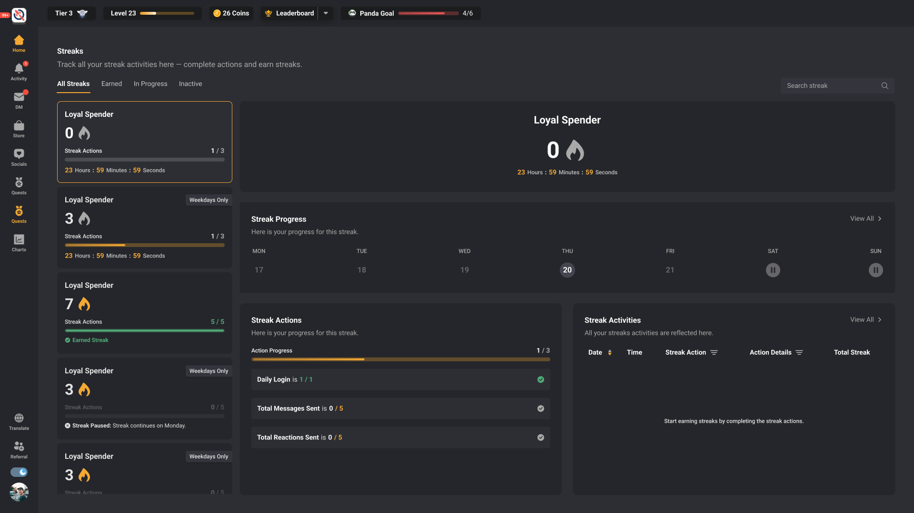
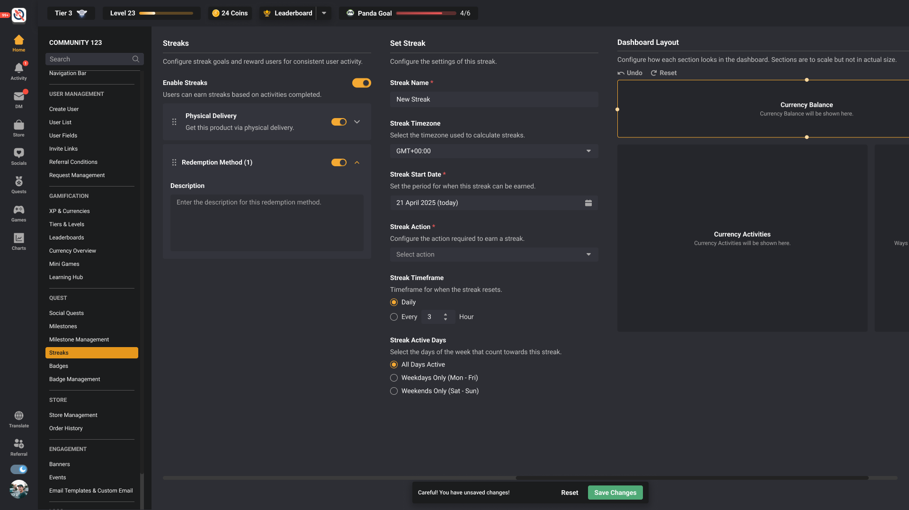
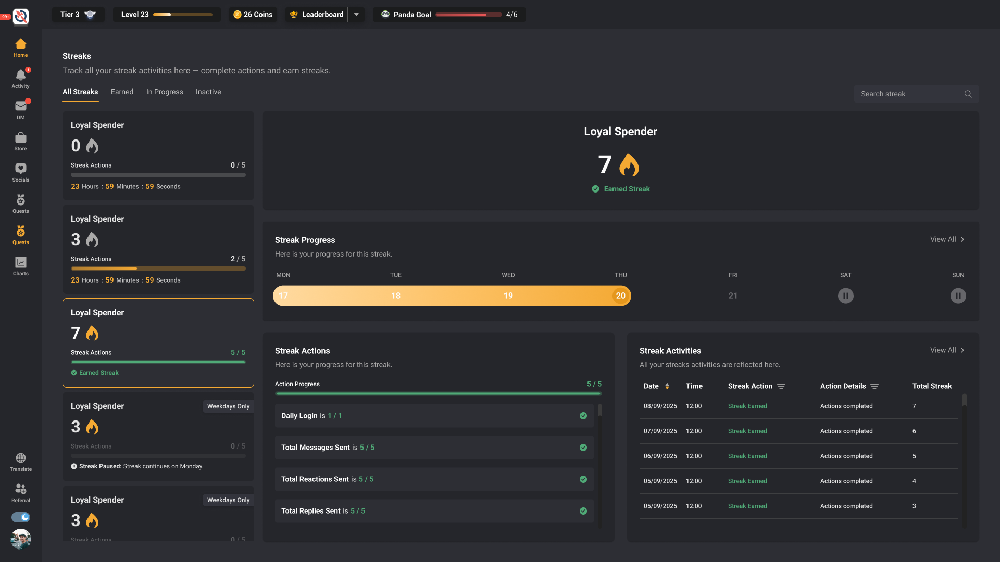
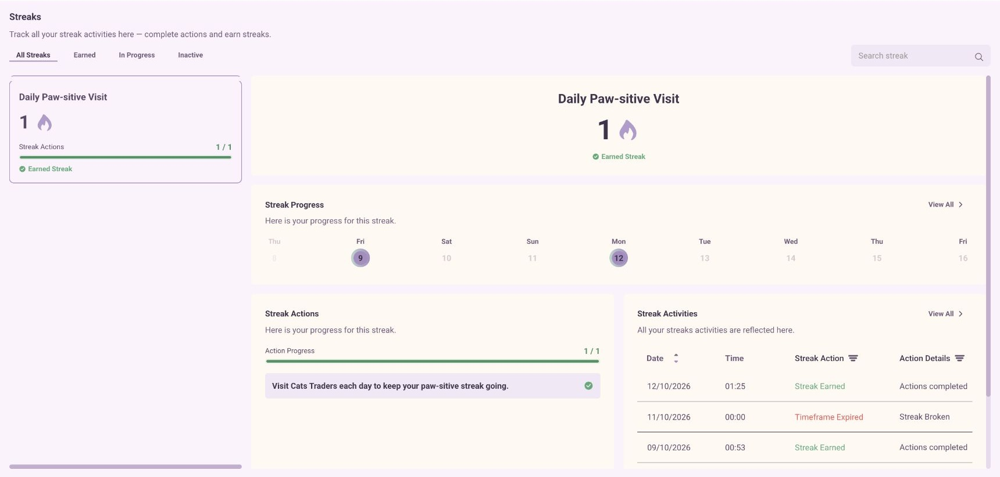
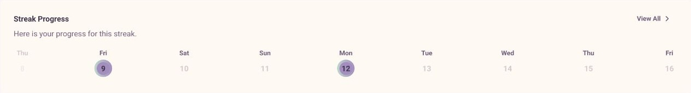
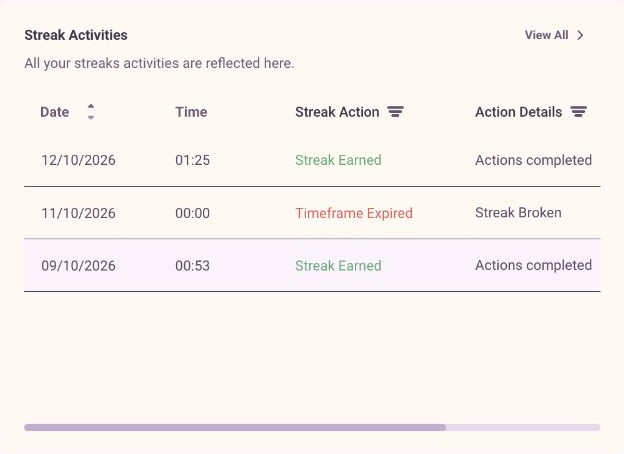

Time / consistency / source authority
A habit made visible.
One timeframe at a time.
Streaks make repeated action legible: the current timeframe, required actions, completion, earned streak and activity history. The widget carries that logic into another surface without becoming a second source of truth.

Widget originator, product model, design and working local implementation; code reviewed by Wai Yan.
Figma + archived local QA + observed CatTrader widget
Choose streak → complete actions → earn → inspect history
Feature flow
A recurring action becomes a readable lifecycle.
- 01
Select a streak
The member sees which streak is selected and what its timeframe requires.
- 02
Complete required actions
Action progress and timeframe progress explain different parts of the same goal.
- 03
Read the outcome
In-progress and earned states distinguish partial work from completion. Other lifecycle states keep interruption understandable.
- 04
Inspect activity
Calendar and history expose the trail behind the current streak.
Explore the product logic
The state should explain where you are.
Switch between three preserved Figma states. The screenshots show design intent; the accompanying local readout describes the lifecycle.

The requirement is visible before any progress.
New streak: the member can inspect actions and timeframe without an activity history.
Local illustration · synthetic examples · no account, reward or configuration changes.
Source → display → runtime
One authority model across several surfaces.

- Source capability
- The feature provides eligible streaks and their underlying action rules.
- Widget choices
- Selection, section visibility and layout are presentation decisions.
- Persistence
- Hidden or temporarily inapplicable values are preserved, so returning to a layout does not lose configuration.
- Compatibility
- Normalization protects existing saved widgets and their runtime output.
Recorded delivery evidence
Design ownership continued into implementation review.
across 12 frontend suites
The preserved Streaks Widget record includes conditional-control checks, selected-streak synchronization, resolver and saved-JSON round trips, and wide/mobile visual inspection. Rui’s QA also documented a loading issue and a required final retest.
- Recorded stage
- The preserved task was marked PUSHED TO PROD. A completed final production check is not established by that status alone.
- What the current capture proves
- CatTrader rendered the configured Streaks widget during this read-only inspection. That verifies the observed surface, not platform-wide adoption or every archived QA outcome.
Original lifecycle evidence
Progress and completion share the same structure.

The working feature / staging evidence
The current streak has an inspectable trail.
The staging member view keeps the earned state, calendar, action progress and activity record connected. Detail crops make the calendar and history readable.



Evidence and limits
Read the artifacts at their actual strength.
Design intent and screen hierarchy.
The visible state at capture time.
Deterministic explanation of documented rules.
Source gaps and integration limits
The archived task stage and local checks do not establish a final CHECKED ON PROD outcome or platform-wide adoption.
Feature walkthrough · updated 12 October 2026. Screens and source records are curated for explanation; no unverified adoption or business-impact claim is made.